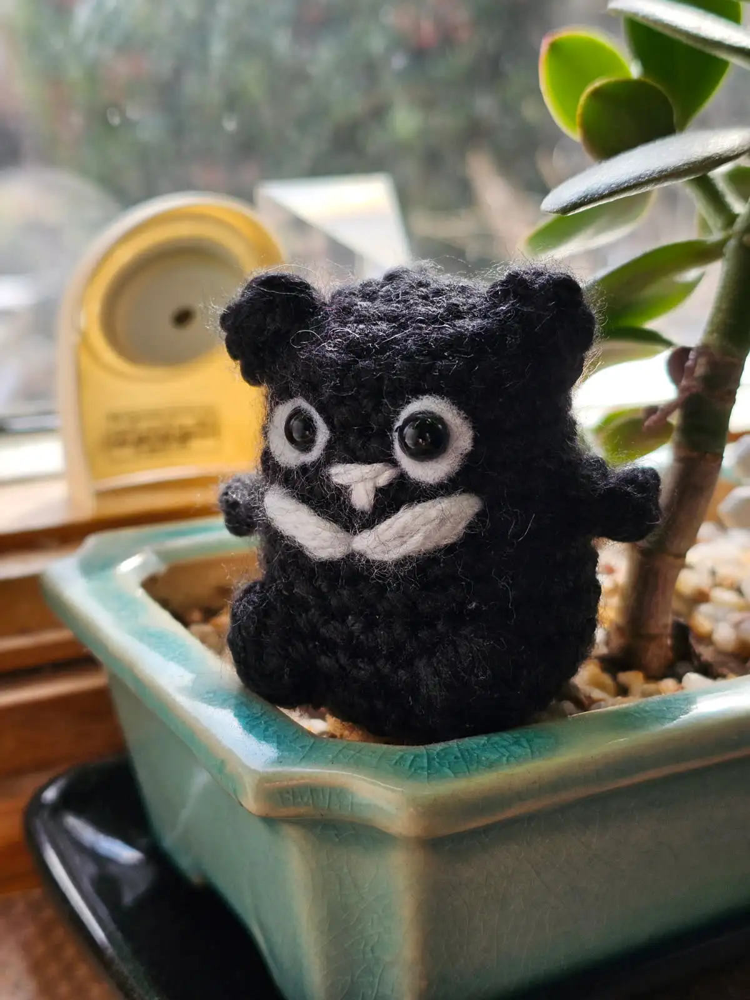

Formosan Bear
The Formosan Bear(Ursus thibetanus formosanus), also known as the Taiwanese black bear, is a subspecies of the Asiatic black bear. It is endemic to Taiwan and is the largest land mammal on the island. It is characterized by its black fur and a distinctive white V-shaped marking on its chest. It is an important cultural symbol in Taiwan and is featured in various folklore and is often used as a mascot for conservation efforts. Due to habitat loss and hunting, the Formosan bear is considered a vulnerable species.
Pattern
Materials: any hook and any yarn you like! Plastic safety eyes(you can also make felt eyes)
Abbreviations: sc: single crochet, inc: increase, dec: decrease
The body
Create a magic circle
Row 1:6 sc(6)
Row 2:6 inc (12)
Row 3:6x(1 sc, inc)(18)
Row 4:3 sc, inc, 1 sc, inc, 6 sc, inc , 1 sc, inc, 3 sc.(22)
Row 5-12:sc in each stitch around.(22)
Row 13:3sc, bobble stich, 4sc, bobble stitch, 8sc, bobble stitch, 4sc
Row 14:decrease, sc 9,decrease, 1sc, decrease,3sc, decrease, sc
Row 15:1 sc, 1dec(12)
Row 16:2dec(6)
Ears(x2)
Make magic circle
4sc in a round(4)
Sew between rows 3 and 4, around 8 stitches apart
Arms(x2)
Row 1:foundation single crochet 3
Row 2:sc3
Sew the top in between rows 7 and 8
Eyes
Add white felt lining around plastic safety eyes, insert in between rows 5 and 6
Nose
Sew a horizontal line 2 stitches wide in between rows 6 and 7
Sew a vertical line through the horizontal one 1 stitch wide into row 7
Neck
Into row 8:sew a V-shape into row 8, each side of the v-shape goes one stitch up, and 4 stitches(left/right)
You finished!